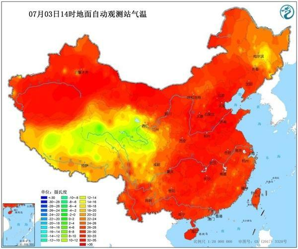

不忠、个性不和，不再相爱。但更多以失败告终的婚姻，并不是原则和底线上出了问题，而是一方忙着工作赚钱，另一方忙着照顾家庭，生活的琐碎耗尽了彼此的激情，夫妻双方在平淡的生活中不再去表达对彼此的爱，以为相互理解，实则渐行渐远。

电影《消防员》中，讲述了一个七年之痒的婚姻故事。一对结婚七年的夫妻，丈夫凯勒是一名消防员，妻子凯瑟琳是医院的公关主任，他们都在各自的职业领域里叱咤风云，婚姻生活却水深火热、破碎不堪。丈夫忍受不了自己每天上班那么辛苦，回家却连一口热饭都吃不上，还因为不顾家经常被妻子各种埋怨，动辄愤怒地摔门而出，无视妻子为家庭的其他付出；妻子觉得丈夫只关心工作，根本不关心家庭，为此自己经常大吼大叫，无数次崩溃大哭，忽视了丈夫工作中的压力。
在职场中，凯勒时常告诫自己的手下：“永远不要丢弃你的同伴，尤其是在火场中。”许多次，他为了保护战友，工作时都是自己率先冒着生命危险冲进去。然而，他却没有将这句真理应用在自己的婚姻生活中，在经历过了无数次激烈的争吵冷战后，离婚似乎成了他们唯一的选择。
凯勒的父亲不忍心看着他们婚姻破裂，他给了儿子一个《爱的挑战40天》的手抄本，恳请儿子按照上面写的做法，花40天的时间修复一下夫妻感情，为挽救自己的婚姻做最后的努力。他告诉儿子，他并不是不爱妻子了，只是忘记了怎样去爱。凯勒答应了，在工作之余，他照本宣科地做起了笔记上的事，在妻子发火的时候不抱怨、为妻子准备一顿早餐，在妻子生病时，贴心倒水喂药，泡咖啡、洗碗、打扫卫生、买鲜花、烛光晚餐……
凯勒原本对这段挑战很抵制，后来却在日复一日的坚持中悟出了婚姻的真谛，他重新审视了一切，明白了自己婚姻破碎的原因，是因为不懂得如何维护两人之间的感情。面对丈夫的点滴变化，凯瑟琳最初不为所动，认为那些不过是丈夫不想离婚暂时使出的小伎俩。凯勒并不放弃，依旧打起12分精神继续坚持着，他一点一点填补着夫妻之间的鸿沟，慢慢融化着妻子被尘封的心，后来，妻子终于重新戴上了婚戒。两个人回到了往昔的甜蜜时光，经历这次婚姻危机，他们学会了在婚姻中要有爱的表达，才能守住幸福。爱人们追求爱情，追求永恒，却总是忘记如何去维护、经营婚姻。
有多少人，还坚守着自己当初婚礼上许下的那个誓言，“无论遭遇任何情况，都始终爱他如一”。
恋爱时，风花雪月可期，彼此时时刻刻都在拿出自己全部的爱展示给对方看，偶尔的小惊喜，总会让对方开心感动。
一旦进入到婚姻，就剩下为家庭奔波，为孩子操劳，再也不讲什么浪漫惊喜。
中年夫妻，有多少人还会在睡觉时相互拥抱、出门时牵着对方的手，互相夸赞对方？
“幸福的婚姻很少是机会的产物，它们如同建筑物似的，必须有理智的、用心的设计”。
婚姻是经营，不是赌博，只有让对方感受到你对她的爱，才能让婚姻更甜蜜、走得更远。让婚姻生活得以保鲜的爱的表达，并不需要你煞费苦心的准备、大张旗鼓的浪费，它不一定非是一顿奢侈的法国大餐，一件特别昂贵的礼物。
它可以是：冰箱上的暖心小贴士；吵架后的先低头认错；对方饿的时候帮他煮的一碗面；清晨的一个吻，出门的一个拥抱；洗完澡后，为她擦干湿漉漉的头发；平常生活里的一点一滴，小路上手牵手的漫步……是俗事缠身的间隙，朝九晚五的空闲，给对方的那份独一无二的专属用心。
《北京遇上西雅图》里，弗兰克感动文佳佳的，正是他在普通日子里的“润物细无声”，她说起他对自己的爱，眼睛里全是深情“他也许不会带我去坐游艇吃法餐， 但是他可以每天早晨都为我跑几条街去买我最爱吃的豆浆油条。” 爱情没有完美，婚姻难免倦怠，平淡而繁忙的生活有时让人厌烦。在琐碎的日子里，这些小小的爱的表达，不是矫情，不是无聊，它是夫妻双方之间流动的爱的证明，是让婚姻幸福走下去的润滑剂。
婚姻中，爱的表达，是让对方明白，你在用心维护着一段感情，用心经营着两人的日子。即使生活在日复一日的平淡中被慢慢磨掉光芒，你对她的温馨，也可以让琐碎的人生中，充满温暖而长情的告白。 电影、烛光晚餐或是两个人的旅行，这无关物质，而是对生活的一种热爱，对彼此的珍视。 携手一生的意义不仅仅是婚礼上说出口的誓言，还有责任，支持，包容，忠诚以及很多。再浓烈的感情，再幸福的婚姻，如果不懂得经营，没有爱的守护，也终将被琐碎的生活磨得一干二净。 很多人害怕结婚，是因为害怕所有的美好被时光磨平，但其实只要夫妻双方足够用心，就可以让琐碎的日子一直生动鲜活。如果你在婚姻生活中不再感受到激情，先别急着离婚，不妨重新恋爱一次看看。
| 姓名 | 性别 | 性取向 | 有无对象 | |
|---|---|---|---|---|
| iuk | M | W | yes | |
| sss |  W W |
W | yes | |
| ss | W | M | no | |
| kk | M | M | yes | |
| 性别 | |
| 生日 | |
| 所在地区 | |
| 婚姻状况 | 已婚未婚 |
| 学历 | 小鲜肉 老腊肉 |
| 喜欢的类型 | |
| 我同意 | |
| 老子是会员 | |
我同意以下条件
|
今天（3日），华北、黄淮多地出现高温天气，截至下午2点，北京、天津、郑州等地气温突破35℃。预报显示，今后三天（3－5日），这一带的高温天气将继续发酵，高温范围以及强度将在4日达到鼎盛，预计北京、天津、石家庄、济南等地明天的最高气温有望突破38℃，其中北京和石家庄的最高气温还有望创今年以来的新高。
气温41.4℃！地温66.5！北京强势迎七月首个高温日
今天，华北、黄淮一带的高温持续发酵，截至今天下午2点，陕西北部、山西西南部、河北南部、北京、天津、山东西部、河南北部最高气温已普遍超过35℃。大城市中，北京、天津、郑州均迎来高温日。
今天，北京地区迎来今年七月份的首个高温日。监测显示，截至今天下午3点，城区气温普遍在36到39℃之间，古观象台、大观园、回龙观等地气温超过40℃，气温最高的站点出现在昌平区流村，达到41.4℃。
在阳光暴晒下，地表温度也逐渐走高。今天下午2点，华北黄淮大部地区的地表温度都在50℃以上，部分地区地表温度甚至超过60℃。其中，河北衡水地表温度高达68.3℃，天津站和北京站附近的地表温度分别高达66.6℃和66.5℃。
明日热度再升级！京津冀携手冲击38℃＋
中国天气网气象分析师王伟跃介绍，明天（4日），华北、黄淮地区35℃以上的高温天气还将继续升级，并进入鼎盛阶段，高温强度和范围都将发展到最强。
明天，北京南部、天津大部、河北中部和南部、山东中部和西部、山西南部局地、河南北部、东北部分地区的最高气温都将达到或超过35℃。
大城市中，明天（4日）石家庄的最高气温会向39℃冲击，北京、天津、济南也将达到38℃，酷热难耐。其中，北京和石家庄的气温都有望刷新今年以来的最高气温纪录。（注：此处北京气温统计地为南郊观象台，其他站点可能会超过这个温度。）
由于明天京津冀一带的气温还将继续升级，地表温度也将随之走高，预计，京津冀一带部分地区地表温度或将继续超过60℃。
到了5日，北方35℃以上的高温天气范围将略有缩小，但在河北南部、山东西部、河南北部、山西南部、陕西中南部部分地区、新疆东南部的最高气温依然会达到或超过35℃。
京津冀周末迎降温 唯有济南热度不减
中国天气网气象分析师王伟跃介绍，周六（6日）开始，受降水天气影响，华北、黄淮大部的35℃以上高温天气会逐渐缓解，仅在河南、陕西南部、山西南部等地有分散性高温天气出现。7日以后，盘踞在华北、黄淮35℃以上的高温天气将逐渐销声匿迹。
不过，专家提醒，济南被雨水天气完美绕开，因此未来一周，当地的高温还会天天上岗。在此提醒当地居民注意防暑降温，防范持续高温带来的各种不利影响。
中国天气网 作者：王治川
熊二
光头强